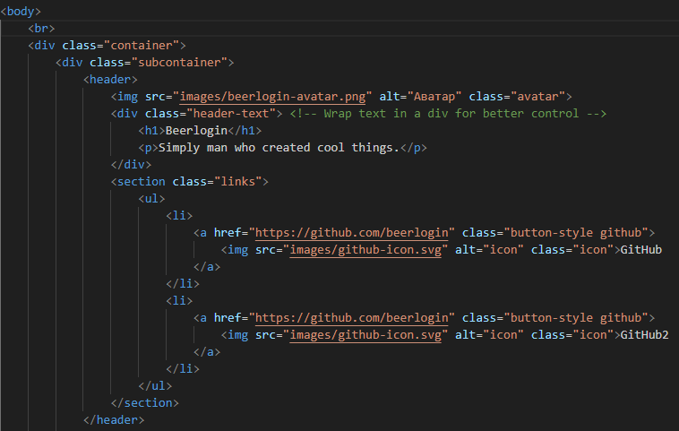

Описание проекта
Этот проект был создан с целью попробовать поработать с CSS и HTML вместе. Я сам пытался изучать CSS и HTML чтобы сделать этот сайт о себе, чтобы я его мог дать любому человеку, чтобы он мог изучить моё портфолио.
Ключевые особенности
- Стремление изучить веб дизайн
- Понимание что такое тени
- Ошибочные догадки о том, что можно сделать тень у текста не убого
- Попытки сделать поддержку различной ширины моего браузера

Технологии, использованные в проекте
В разработке сайта использовались следующие технологии:
- HTML5 и CSS3 для разметки и стилей
- JavaScript для интерактивности
- Фреймворк Bootstrap для адаптивного дизайна
- Системы контроля версий Git для управления кодом

Заключение
Этот проект стал отличной возможностью для меня развить свои навыки веб-разработки и продемонстрировать свою креативность. Я надеюсь, что вам понравится использовать этот сайт так же, как мне понравилось его создавать!